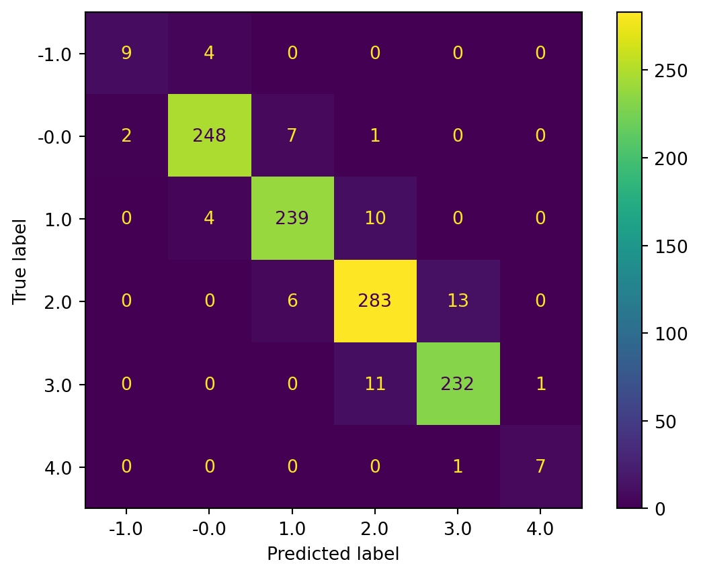
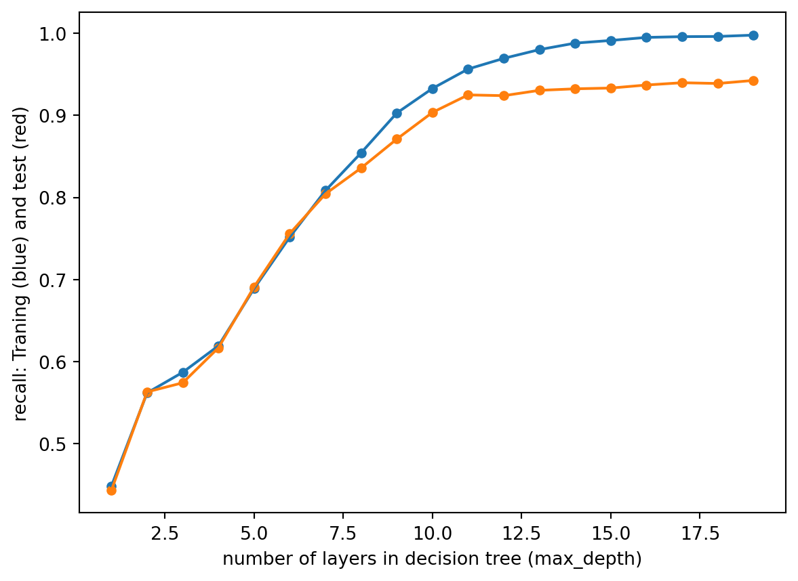
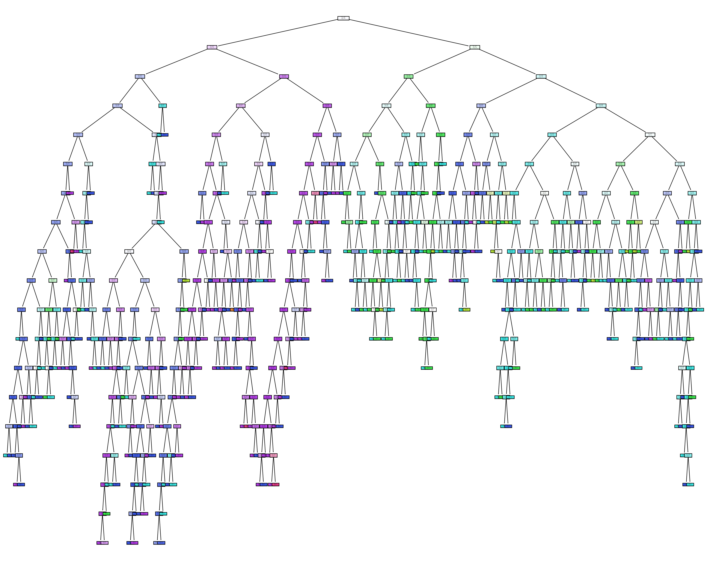

I am using decision tree to classifer and preidct the natural population growth rate. In the dataframe, you can see I collect the gdp, year, country, death rate, birth rate, Life expectancy and DALYs (Disability-Adjusted Life Years). decision used to analyze data for classification and regression analysis. I can tell which factor causes the natural growth rate. After I Re-train the decision tree using the optimal hyper-parameter 18, I achieved an accuracy of 93%, which indicates that my model predicted the natural population growth rate can be an accurate rate of 93%.
Code
import pandas as pdimport seaborn as sns import matplotlib.pyplot as pltfrom sklearn import treefrom IPython.display import Imageimport numpy as npfrom sklearn.metrics import accuracy_scorefrom sklearn.metrics import precision_scorefrom sklearn.metrics import recall_scorefrom sklearn.metrics import ConfusionMatrixDisplay, confusion_matrix,classification_reportfrom sklearn import treefrom sklearn.model_selection import train_test_split
Code
population = pd.read_csv('../../data/01-modified-data/cleaned-population-py.csv')population = population.drop(columns=['Unnamed: 0'])population = pd.get_dummies(population,columns=['Entity'])population.head()
Year
Natural_growth_rate
GDP
Deaths
Births
Life
Disability
Entity_Afghanistan
Entity_Albania
Entity_Algeria
...
Entity_United Arab Emirates
Entity_United Kingdom
Entity_United States
Entity_Uruguay
Entity_Uzbekistan
Entity_Vanuatu
Entity_Vietnam
Entity_World
Entity_Zambia
Entity_Zimbabwe
0
2002
3.69
1189.784668
229450
980458.0
56.784
78088.270828
1
0
0
...
0
0
0
0
0
0
0
0
0
0
1
2003
3.67
1235.810059
240215
1063246.0
57.271
75103.762176
1
0
0
...
0
0
0
0
0
0
0
0
0
0
2
2004
3.61
1200.277954
243367
1097160.0
57.772
73137.361976
1
0
0
...
0
0
0
0
0
0
0
0
0
0
3
2005
3.53
1286.793701
241454
1099366.0
58.290
71629.722924
1
0
0
...
0
0
0
0
0
0
0
0
0
0
4
2006
3.50
1315.789062
246037
1136774.0
58.826
70807.147852
1
0
0
...
0
0
0
0
0
0
0
0
0
0
5 rows × 194 columns
Code
y = np.round(population['Natural_growth_rate'])X=population.loc[:,population.columns !='Natural_growth_rate']X=(X-np.mean(X,axis=0))/np.std(X,axis=0)# INSERT CODE TO PARTITION THE DATASET INTO TRAINING AND TEST SETSX_train,X_test,y_train,y_test = train_test_split(X,y,test_size=0.2)
Code
# INSERT CODE, AS A CONSISTENCY CHECK, TO PRINT THE TYPE AND SHAPE OF x_train, x_test, y_train, y_test#INSERT CODE TO PARTITION DATASET INTO TRAINING-TESTprint(X_train.shape)print(X_test.shape)print(y_train.shape)print(y_test.shape)print(y.value_counts())
#### INSERT CODE BELOW TO TRAIN A SKLEARN DECISION TREE MODEL ON x_train,y_train model = tree.DecisionTreeClassifier()model = model.fit(X_train,y_train)
Code
# INSERT CODE TO USE THE MODEL TO MAKE PREDICTIONS FOR THE TRAINING AND TEST SET yp_train = model.predict(X_train)yp_test = model.predict(X_test)
<sklearn.metrics._plot.confusion_matrix.ConfusionMatrixDisplay at 0x216141cea40>

Code
# INSERT CODE TO WRITE A FUNCTION "def plot_tree(model,X,Y)" VISUALIZE THE DECISION TREE matrix = confusion_matrix(y_test,yp_test)report = classification_report(y_test, yp_test,output_dict=True)# Save the results in a data frame.report = pd.DataFrame(report).transpose()# display the results data framereport
# COMPLETE THE FOLLOWING CODE TO LOOP OVER POSSIBLE HYPER-PARAMETERS VALUEStest_results=[]train_results=[]for num_layer inrange(1,20): model = tree.DecisionTreeClassifier(max_depth=num_layer) model = model.fit(X_train, y_train) yp_train=model.predict(X_train) yp_test=model.predict(X_test)# print(y_pred.shape) test_results.append([num_layer,accuracy_score(y_test, yp_test),recall_score(y_test, yp_test,average='weighted')]) train_results.append([num_layer,accuracy_score(y_train, yp_train),recall_score(y_train, yp_train,average='weighted')])
Code
test_results = np.array(test_results)train_results = np.array(train_results)plt.figure()plt.scatter(train_results[:, 0], train_results[:, 1], label="training", s=20)plt.scatter(test_results[:, 0], test_results[:, 1], label="training", s=20)plt.plot(train_results[:, 0],train_results[:, 1])plt.plot(test_results[:, 0],test_results[:, 1])plt.xlabel("number of layers in decision tree (max_depth)")plt.ylabel("Accuracy(Y=0): Traning (blue) and test (red)")plt.show()plt.figure()plt.scatter(train_results[:, 0], train_results[:, 2], label="training", s=20)plt.scatter(test_results[:, 0], test_results[:, 2], label="training", s=20)plt.plot(train_results[:, 0],train_results[:, 2])plt.plot(test_results[:, 0],test_results[:, 2])plt.xlabel("number of layers in decision tree (max_depth)")plt.ylabel("recall: Traning (blue) and test (red)")plt.show()

Train optimal model
Re-train the decision tree using the optimal hyper-parameter obtained from the plot above
Code
#### COMPLETE THE CODE BELOW TO TRAIN A SKLEARN DECISION TREE MODEL ON x_train,y_train model = tree.DecisionTreeClassifier(max_depth=18)model = model.fit(X_train, y_train)yp_train=model.predict(X_train)yp_test=model.predict(X_test)plot_tree(model,X,y)# Calculate the confusion matrix and classification report for the train and test data. matrix = confusion_matrix(y_test,yp_test)report = classification_report(y_test, yp_test,output_dict=True)# Save the results in a data frame.report = pd.DataFrame(report).transpose()# display the results data framereport

precision
recall
f1-score
support
-1.0
0.750000
0.692308
0.720000
13.000000
-0.0
0.968627
0.957364
0.962963
258.000000
1.0
0.943775
0.928854
0.936255
253.000000
2.0
0.912052
0.927152
0.919540
302.000000
3.0
0.935223
0.946721
0.940937
244.000000
4.0
0.875000
0.875000
0.875000
8.000000
accuracy
0.935993
0.935993
0.935993
0.935993
macro avg
0.897446
0.887900
0.892449
1078.000000
weighted avg
0.936053
0.935993
0.935962
1078.000000
conclusion
After I Re-train the decision tree using the optimal hyper-parameter 18, I achieved an accuracy of 93%, which indicates that My model can predict the natural population growth rate with an accuracy of 93%.